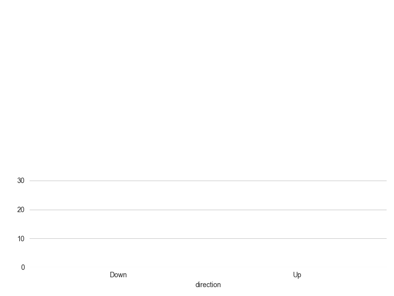
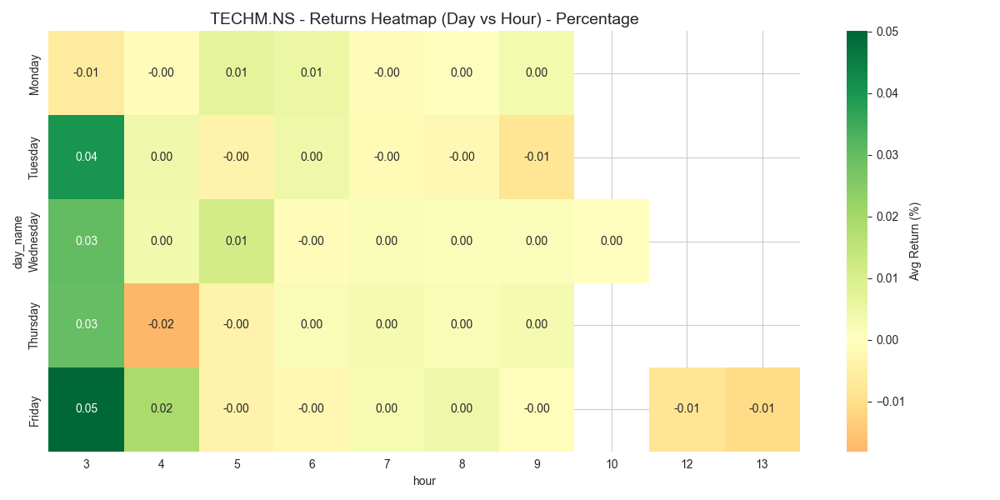
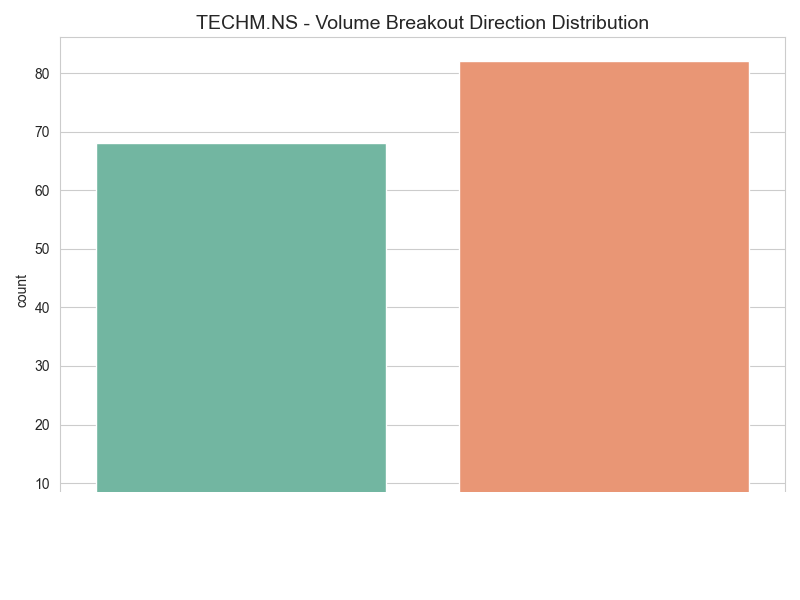

TECHM.NS - Intraday Pattern Discovery Report
Comprehensive analysis of intraday data to identify time, volume, and price patterns using raw OHLCV data.
🎯 Price-Volume Behavioral Patterns
Analysis of raw OHLCV data to detect specific behavioral patterns using mathematical normalization (Z-scores).
Pattern Summary
| Pattern | Count |
|---|---|
| Hidden_Accumulation | 351 |
| Hidden_Distribution | 84 |
| Bullish_Sweep | 4 |
| Bearish_Sweep | 6 |
| Iceberg | 14 |
| Capitulation | 1 |
⏰ Time-Based Patterns
Analysis of returns, volatility, and volume patterns across different times of day and days of week.
Key Insights
- Best Hour: 3 (5.29% cumulative return)
- Worst Hour: 9 (-0.35% cumulative return)
- Highest Volume Hour: 3 (10,316 avg volume)
Hourly Patterns
Day Of Week Patterns

Time Heatmap

🔊 Volume Patterns
Analysis of volume spikes, breakouts, and volume-price relationships.
Volume Spike Summary
- Total Spikes: 124
- Avg 5-min Return After Spike: -0.009%
Volume Spike Scatter

Volume Breakout Dist

📈 Price Movement Patterns
Analysis of momentum, reversals, and price action patterns.
Momentum Patterns
| Unnamed: 0 | pattern | count | continuation_rate | avg_next_return |
|---|---|---|---|---|
| 0 | 3 Up | 275 | 0.476364 | -0.000019 |
| 1 | 3 Down | 240 | 0.400000 | 0.000065 |
Reversal Pattern Performance
🔗 Indicator Combinations
Analysis of combined indicator signals (requires indicator data).